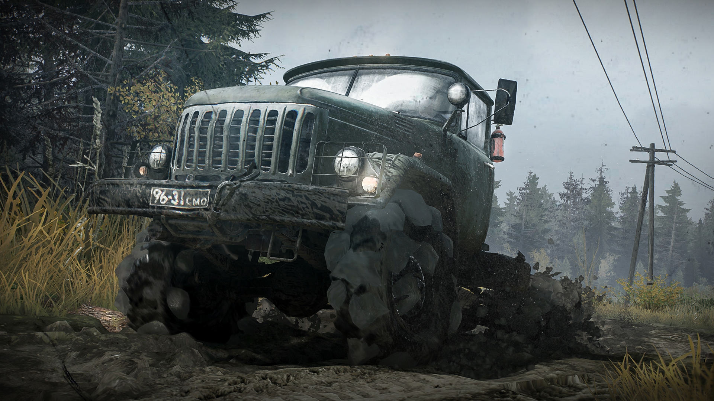

- Resident Evil 4: cada arena es un puzzle de combate; cámara al hombro, ritmo y variedad tremenda. El juego redefine la acción táctil: gestión de espacio, empujes, parries, rotaciones y aprovechamiento del entorno. Su mezcla de tensión + movilidad creó un estándar para shooters modernos. +info
- The Warriors: beat ’em up con identidad de pandilla, co-op y misiones que expanden la película. Su estilo se apoya en controles pesados, peleas callejeras que se sienten “sucias” y un sistema de misiones que mezcla estrategia ligera con caos. Fun fact: Rockstar grabó voces nuevas con actores de la peli original. +info
- Guilty Gear: Strive: golpe contundente, rollback netcode y estilo anime de referencia. Animaciones 2.5D que parecen dibujo tradicional, sistema sencillo para principiantes pero profundo al dominar R.I.S.C., Roman Cancels y presión en esquina. Uno de los mejores netcodes del género de peleas. +info
- Monster Hunter: World: ecosistemas vivos; progresión por equipo y maestría. Combate técnico, loop adictivo y un diseño donde cada monstruo es una lectura constante de animaciones, patrones y ventanas. Flujo de exploración + cacería + craft que engancha incluso sin historia pesada. +info
- DBZ Budokai Tenkaichi 3: plantel enorme, transformaciones y arenas destructibles; fan service puro. El sistema de batalla 3D captura la fantasía del anime mejor que muchos juegos modernos: ráfagas gigantes, choques de ki, movilidad libre y combos que se sienten “de la serie”. A día de hoy sigue siendo comunidad competitiva activa. +info
- MudRunner: zen del off-road; física del barro, cabrestante y rutas imposibles. Es un juego de paciencia: leer el terreno, calcular peso, usar marchas cortas y abrazar el fracaso lento. Su física es tan precisa que cada centímetro importa. Muy usado incluso por fans del off-road real. +info
Qué tienen en común: aprendizaje por sistemas (no por tutoriales), identidad estética marcada, coherencia interna y una “sensación” de juego muy distinta entre ellos pero igual de sólida. Cada uno recompensa la observación, no la acción impulsiva: entender cómo funciona su mundo es la clave para disfrutarlos.
Pregunta para reader: ¿Cuál de estos volverías a pasar hoy y qué te re-atrapa?
Hazme hover para ver la imagen!!
